제품&기술
농업용 비닐(비오칸)
멀칭필름
Mulch PE는 현대 농업에서 작물 재배과정에서의 토양의온도와 수분을조절하며 식물의 성장을 증진하는 친환경 재료로서,
잡초억제와 병.해충방지 등 농업에 효율적인 농사를 지을 수 있게 한다.
- LLDPE : 쌀알 크기의 분자고리들이 두겹, 세겹씩 서로 엉킨 상태로 합성 질감과 인장력이 좋으며 빛의 투광성이 좋아 보온력이 뛰어나므로 멀칭피복 시 땅의 습도 조절, 지온조절등 농업용필름에 적합하며 사용두께(0.02~0.03㎜) 피복이나 폐비닐 수거에 용이함
- HOPE : 좁쌀 크기의 분자고리들이 수겹으로 서로 포개진 상태로 합성 투명성이나 인장력은 떨어지면 습도조절을 하지 못해 관수의 집중이 필요하나 내구성이좋아 피복 시 필름의 늘어짐이없어서 폐비닐수거에용이함
-
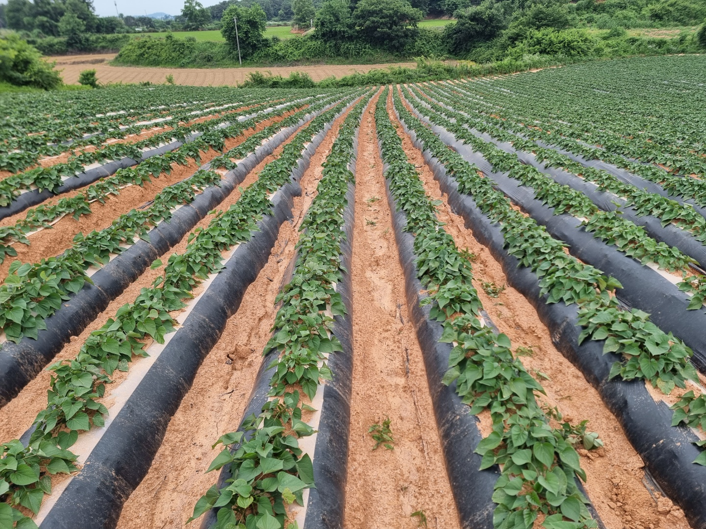
고구마&감자SWEET POTATO & POTATO
- 고구마
- 고구마는 최근 각기 특성이 다른 고구마 푸종이 연구 개발되고, 습기와 지역(흙), 제초(잡초억제)등의 효과적인 피복비닐 보급으로 생산량이 증가되고 있으며 LLDPE 배색필름으로 주로 멀칭을 한다.
- 감자
- 감자는 봄과 가을 두 번의 재배를 하며 온도에 덜 민감하여 흑색 비닐로 주로 멀칭한다.
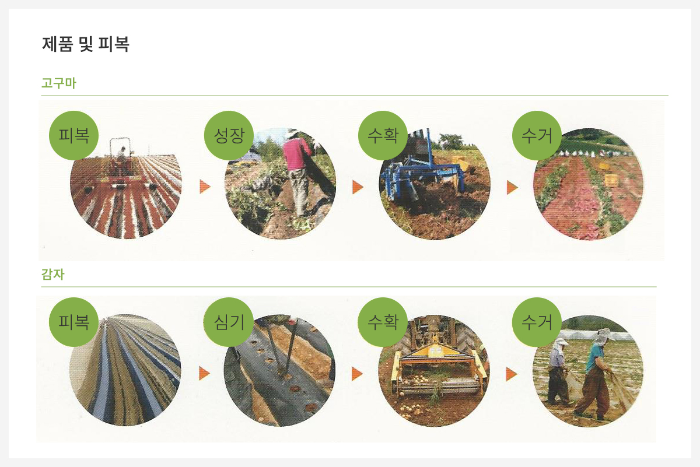 -
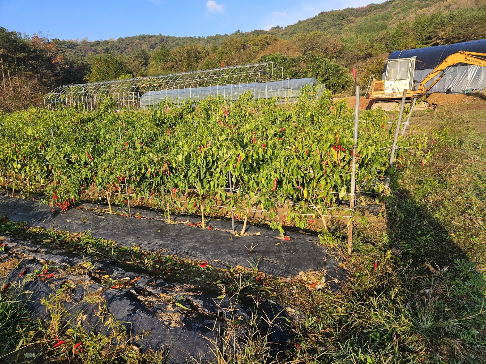
고추CHILI
- 필름(비닐) 특징
- 다양한 종류의 고추전용 비닐(전면 흑색, 배색(흑색+배색), 전면 녹색, 흑.녹배색(흑색+녹색))이 개발되어 있어서 지역(흑)의 보호와 습(물)을 조절하여 낮과 밤의 온도변화에서 오는 서리와 냉해를 막아주고 잡초를 억제하는 일석삼조의 효과까지 얻을 수 있다.
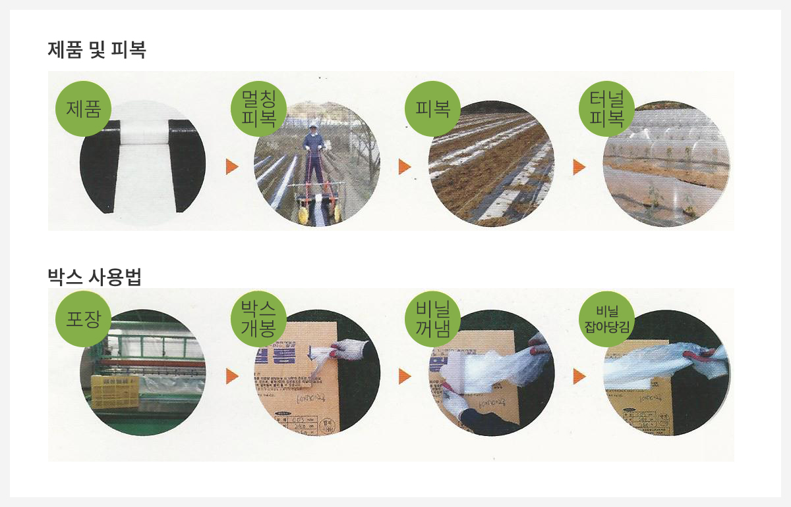 -
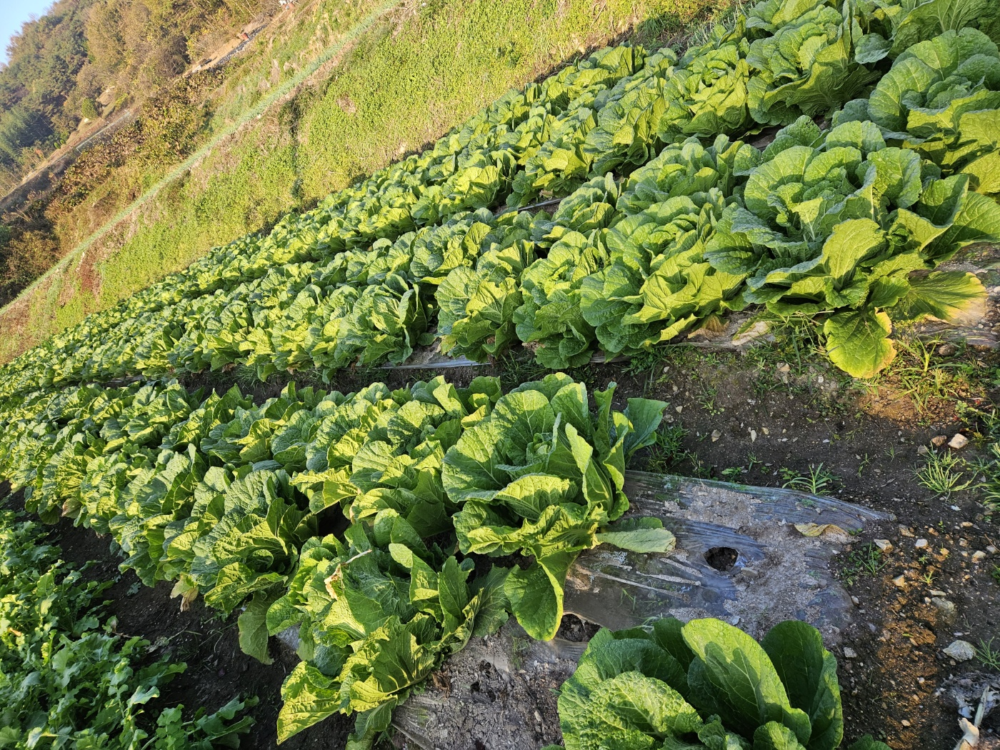
배추Napa cabbage
- 필름(비닐) 특징
- 트랙터에 비닐 피복기를 설치하여 기계 피복을 하기 때문에 멀칭비닐의 강도가 우수하여야 하며 배추는 추운 겨울을 난 후 수확하기 때문에 월동기동안 원래의 피복상태를 유지해야 고품질의 배추를 생산할 수 있다. 배추전용멀팅(LLD PE)을 피복하면 제초(잡초억제) 효과와 저열저하를 막아 월동(겨울나기)하는 배추의 생육이 도움을 준다.
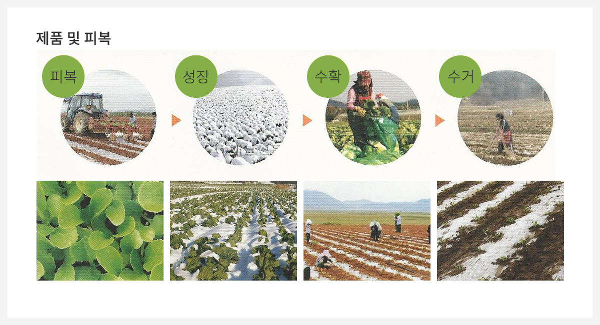 -
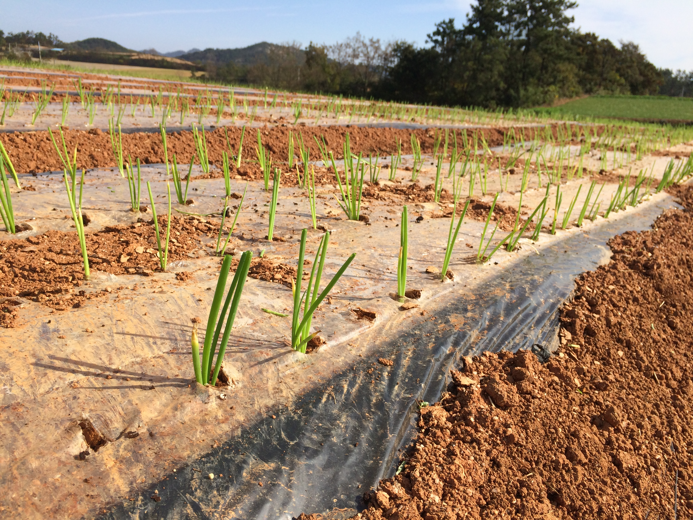
양파&마늘Onion & Garlic
- 양파
- 양파는 겨울 추위 동안 성장을 멈추는 특성이 있으나 뿌리는 지속적인 영양분을 흡수하고 있기 때문에 비닐피복을 해야 한다. 지역별..
- 마늘
- 마늘 파종 전에 비닐면에 작물 특성에 따라 타공(유공)한 멀칭비닐을 피복 후 소독하여 씨마늘을 파종한다. 품종별 선택 피복한 비닐면에 정확한 규격의..
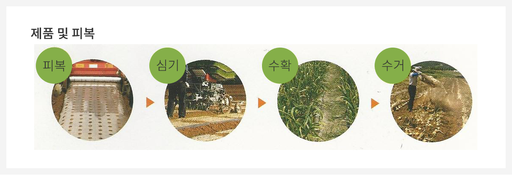 -
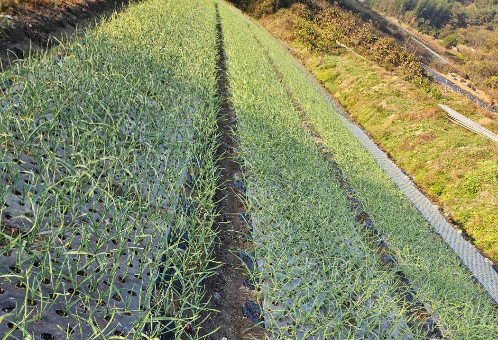
대파&쪽파welsh onion & chives
- 대파
- 전면 흑색비닐(LLD)을 선택하여 기계(트랙터)를 이용한 피복으로 부족한 일손을 대신하며 잡초 억제의 효과와 월동(겨울나기)기에 지역에 내려가는..
- 쪽파
- 선택 피복한 비닐면에 정확한 규격의 타공(유공)으로 생육 중인 고랑 사이사이로 바람 통풍이 잘 되어서 병충해를 예방하고 질긴 멀칭비닐(LLD PE)..
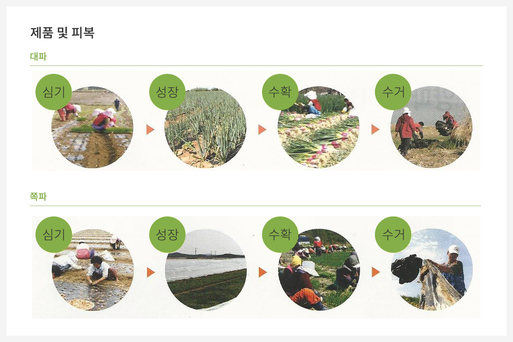 -

참깨 & 콩SESAME SEED & BEEN
- 참깨
- 자외선이 강한 여름에 성장하는 작물이기 때문에 전면에 흑색 멀칭 비닐을 지역(흑) 상승을 막아주고 잡초의 성장까지도 둔화시키는 역할을 기대..
- 콩
- 최근에 개발된 품종들은 낮은 지역(흑)에서 잘 성장하므로 전면 흑색 멀칭 비닐을 피복하면 지역 상승을 막고 잡초의 억제효과를 기대할 수 있고..
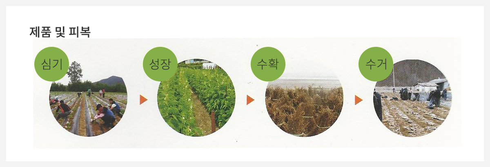
색상에 따른 멀칭필름
잡초억제, 지온관리 등 다양한 목적으로 멀칭을 한다. 멀칭필름에는 투명, 흑색, 배색, 녹색 등 여러색이 있으며 작물, 지역, 기후환경에 따른 필름을 선택하여 효율적인 농사를 지을 수 있다.
-
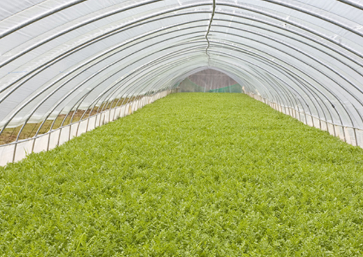
투명비닐
- 멀칭과 보온용 터널, 온실용 하우스 등으로 다양한 거의 모든 작물에 이용
- 보온과 햇볕 투과율이 놓아 씨앗으로 파종 시 싹을 틔우는 시간 단축, 건강한 뿌리내림으로 어린 모의 성장을 도와줌
- 농업용 비닐중에 선호도가 가장 높으며 실제 사용량도 가장 많음
-
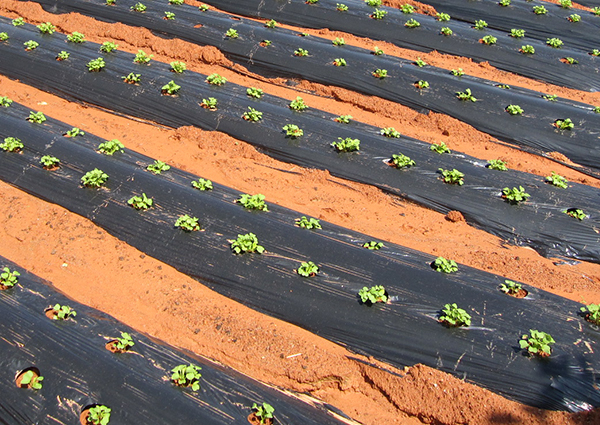
흑색비닐
- 자외선 등에 오래 버틸 수 있고, 질감도 좋아서 비닐의 수명이 길어 농업용 외에도 소비처가 다양함
- 지온상승으로 인한 박물의 고온(햇볕 기온이 섭씨 20℃ 이상일 때) 장애를 막고, 잡초의 성장을 막아주어 작물의 성장에 필요한 양분을 잡초에 빼앗기지 않게 햇빛 차단
-
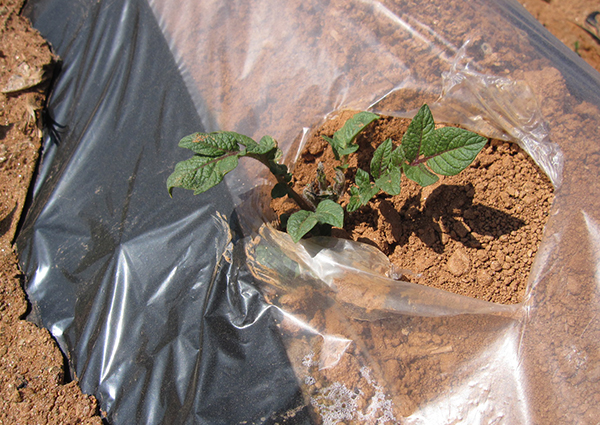
배색비닐
- 한면의 비닐표면에 둘 이상의 색상으로 2차가공의 비닐
- 중앙의 투명에는 작물이 심어지는 곳으로 보온과 습의 활성으로 어린 모의 뿌리 활착을 빠르게 하고 지온과 지급을 유지시켜서 땅속의 미생물의 활발한 운동
- 볕 차단용으로 필요 작물들로 고추, 참깨 등의 가지 열매를 가진 작물에 이용
- 재식거리를 넓혀서 통풍이 잘 되게 하고 작물의 성장 시 병충해 등과 가뭄 시 관수에 관심을 작아야 한다
-
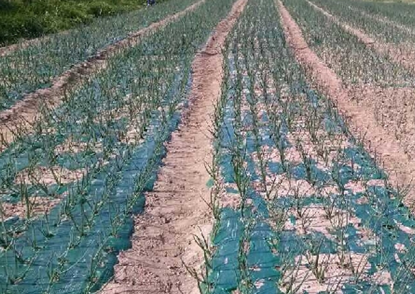
녹색비닐
- 친환경 작물의 재배에 효과적으로 많이 사용됨
- 녹색비닐은 저온으로 투과하는 열이 순 백색 비닐의 3배에 이르기 때문에 비닐 속의 꾸준한 지온 상승
-
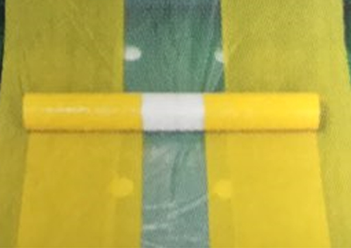
황색 & 노랑비닐
- 흙의 생강과 동일하기 때문에 작물에 살포된 퇴비와 영양제가 흙에 잘 흡수되어 미네랄과 유효미생물의 생성과 활동을 돕고 자물이 성장하는 동안 흙과 작물간의 소통을 원할하게 한다
- 지온 상승과 잡초억제에 효과적임